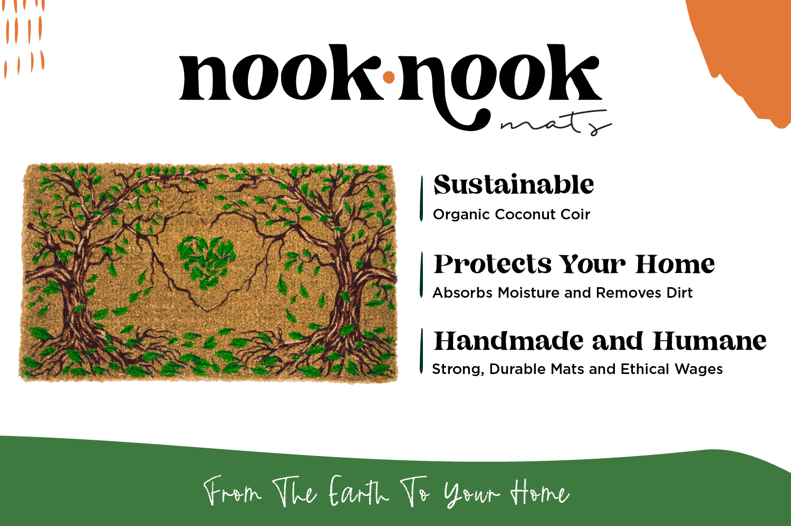
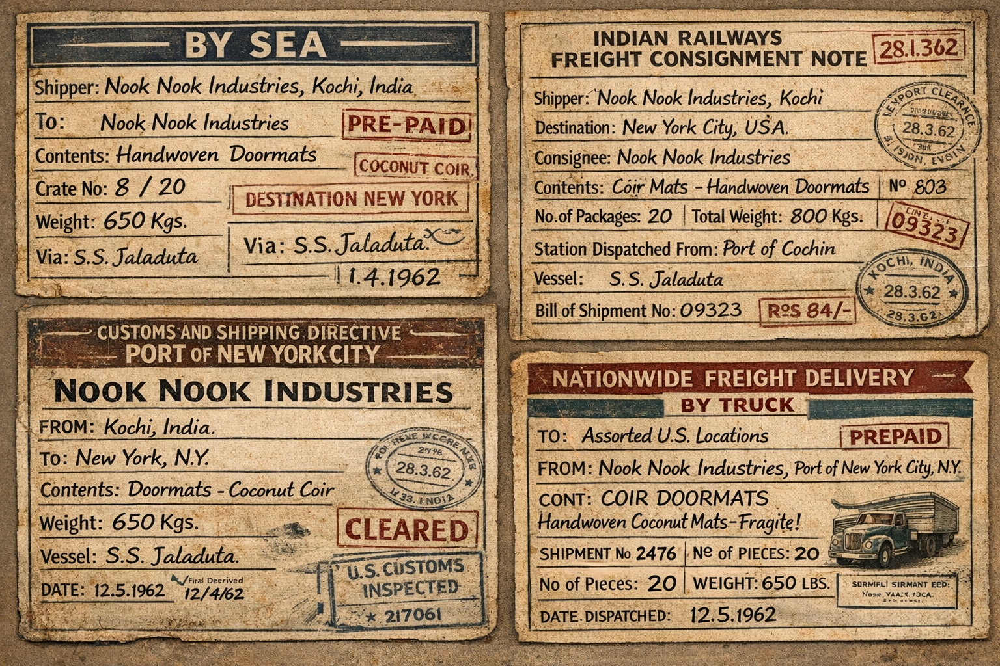
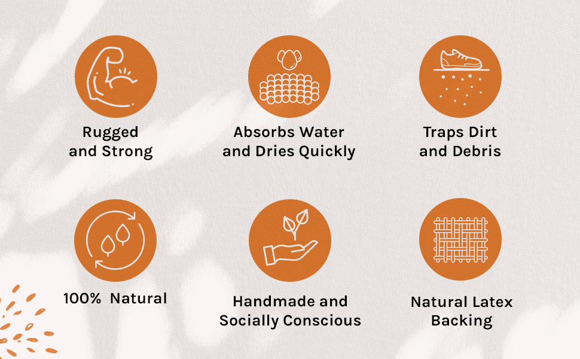

While working full-time as a researcher, I founded a sustainable home goods brand. Inspired by Indian coconut coir mats, I designed eco-friendly doormats made by local artisans in Kochi, India. I sought suppliers who paid higher wages, manufactured by hand loom, and limited environmental impact.

Sustainable • Handmade • Humane

Hand-woven Tree Design

From The Earth To Your Home
I learned logistics, accounting, marketing, and management and just kept going.


Hand-Woven in Kochi, India



The experience changed how I saw the world.
That project ended in 2023.